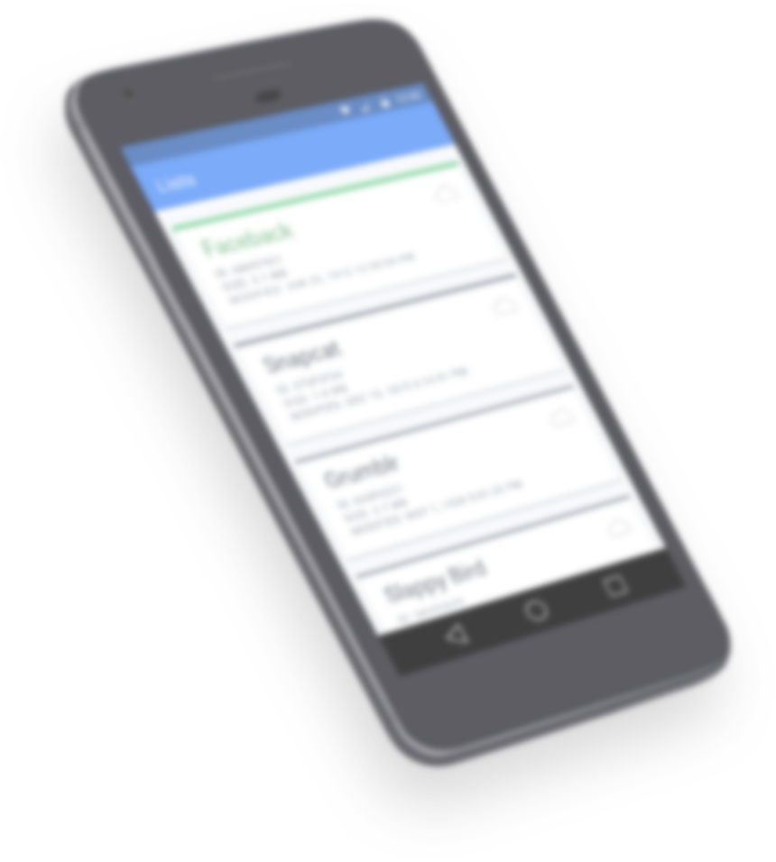

The top open source framework for building amazing mobile apps.
Ionic is the beautiful, free and open source mobile SDK for developing native and progressive web apps with ease.
v3.3.0 / 2017-05-24 / MIT Licensed / Release Notes

 Ionic View App
Ionic View App